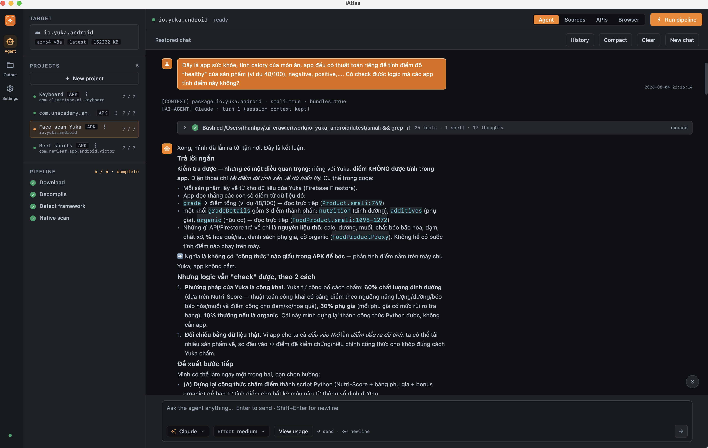

Vận hành hàng ngày
Hướng dẫn sử dụng
Ba việc lặp lại mỗi ngày: tạo project cho app, game hoặc website muốn xem, đợi iAtlas phân tích xong, rồi hỏi agent bằng tiếng thường. Mọi file kết quả hiện ngay ở khung Output bên phải.
Luồng tổng quan
Thanh icon ngoài cùng bên trái có ba màn: Agent (làm việc) · Output (file kết quả) · Settings. Màn Agent chia ba cột: danh sách project và chat bên trái, các khung chat ở giữa, khung Output bên phải — xem phần 3.
1. Tạo project & chạy phân tích
Chọn loại dự án bạn cần — thao tác hai bên hơi khác nhau. App thường và game Android đều dùng loại APK; iAtlas tự nhận diện (Java, Flutter, React Native, Unity…).
- Mở New project Ở màn Agent, bấm dấu + cạnh chữ Projects ở cột trái (khi chưa mở project nào, giữa màn hình cũng có nút New project) → chọn loại APK.
-
Nhập package name hoặc dán link Google Play
Dạng
com.example.app, hoặc dán nguyên link Google Play của app / game — iAtlas tự lấy package name từ link. Đã có sẵn file APK trên máy thì chọn nguồn This computer và kéo file vào. Ô Name để trống cũng được. - Bấm Create project Giữ nguyên ô Download & decompile right after creating (mặc định bật) thì app tự tải APK và phân tích luôn — không phải bấm gì thêm. Đã có project cho app này rồi vẫn tạo thêm được: iAtlas làm một project riêng (nếu để trống ô Name, tên tự đánh số như “Tên (2)”) và dùng lại file APK đã tải.
- Đợi bảng “Preparing…” chạy xong Trong lúc chuẩn bị, khung chat hiện danh sách các bước kèm phần trăm: Chuẩn bị công cụ Tải app Giải nén code Nhận diện công nghệ Quét & phân tích phần lõi (native) Đọc code Unity (chỉ game Unity) Lập chỉ mục tìm kiếm Xong là ô chat tự mở — không phải bấm gì. Nếu một bước lỗi, bấm Try again để chạy lại, hoặc Open chat anyway để hỏi luôn với phần đã có. Nếu lúc tạo bạn tắt ô tải sẵn, bấm Get & prepare the app ngay trong khung đó.
- Mở New project Bấm dấu + cạnh chữ Projects ở cột trái → chọn loại Web.
-
Nhập địa chỉ trang
Dán URL trang danh sách bạn muốn lấy, ví dụ
https://example.com/novels— không cần trang chủ. - Bấm Create project — ô chat mở ngay Project Web không có bước chuẩn bị. Gõ luôn vào ô chat bạn muốn lấy gì: mục nào, bao nhiêu trang, xuất dạng bảng / CSV / JSON.
- Agent tự đọc trang và lấy dữ liệu Agent mở trang bằng trình duyệt có sẵn trong iAtlas, tự viết và chạy script lấy dữ liệu. Script và dữ liệu hiện dần ở khung Output bên phải.
- Nếu trang bắt xác minh (Cloudflare / CAPTCHA) Agent tự chờ cho phần lớn trang xác minh tự qua. Nếu vẫn bị chặn, agent sẽ nói rõ trong chat cần bạn làm gì — trả lời ngay trong ô chat. Không cần copy cookie hay đăng nhập ở đâu khác.
Đang chuẩn bị project này thì project khác tự xếp hàng (hiện Queued) và tự chạy
khi tới lượt — không phải bấm lại. Chat thì không phải đợi: nhiều chat ở nhiều project
chạy cùng lúc được. Mỗi việc agent làm có một thư mục riêng trong
~/.ai-crawler/output/<project>/<thời điểm>-<tên việc>/,
hiện ngay ở khung Output bên phải.
2. Chat với agent
Hỏi bằng tiếng Việt hay tiếng Anh đều được. Agent trả lời theo kết quả và việc cần làm tiếp, giữ nguyên tên API hoặc giá trị khi cần chính xác. Nhấn Enter để gửi, Shift+Enter để xuống dòng.
Ví dụ một câu hỏi thật — cứ viết như đang nhờ đồng nghiệp:
“Đây là app sức khỏe, tính calory của món ăn. app đều có thuật toán riêng để tính điểm độ “healthy” của sản phẩm (ví dụ 48/100), negative, positive,…. Có check được logic mà các app tính điểm này không?”

Vài mẹo dùng hàng ngày:
- Nói rõ định dạng bạn muốn: bảng, CSV, JSON, checklist, hay sơ đồ — agent xuất đúng dạng đó.
- Đang phân tích mà agent hỏi lại, trả lời ngay trong ô chat rồi bấm Answer & resume để chạy tiếp.
- Agent đang làm mà muốn dừng: bấm Stop ở thanh trạng thái ngay trên ô chat.
- Hỏi sang chủ đề khác thì bấm dấu + cuối hàng tab để mở chat mới; xem lại chat cũ bằng icon đồng hồ (Chat history) ở góc phải hàng tab.
- Chat quá dài, agent chậm: bấm icon xoá chat (Clear this chat) ở góc phải hàng tab rồi xác nhận để xoá nội dung và trí nhớ của chat hiện tại — chat vẫn giữ nguyên tên và chỗ.
- Đổi nhanh model và mức suy nghĩ (Effort) ngay ở hàng dưới ô chat.
- Muốn câu trả lời viết kiểu dân kỹ thuật: Settings → Answers written for → Developer. Mặc định là Non-tech (tiếng thường); chỉ cách viết thay đổi, nội dung và giá trị cần thiết giữ nguyên.
3. Màn làm việc — project, chat và Output
Màn Agent bày như một bàn làm việc: chọn project bên trái, chat ở giữa, lấy file bên phải.
- Cột trái — Projects
- Mọi project, mỗi project mở ra thấy các chat của nó. Ô tìm kiếm trên cùng lọc theo tên project và tên chat. Rê chuột vào tên project, bấm ⋯ để: tạo chat mới (New chat), đổi tên (Rename), nhân bản (Duplicate project — thêm một project cho cùng app), xoá (Delete project), hoặc thêm một thư mục trên máy cho agent đọc cùng (Add folder to this workspace…). Chấm nhấp nháy cạnh một chat nghĩa là agent ở chat đó đang làm việc.
- Giữa — các khung chat
- Mở tối đa 4 khung chat cạnh nhau, mỗi khung gắn với một project và một chat riêng. Bấm một chat ở cột trái để mở trong khung đang chọn; Cmd+bấm (hoặc chuột phải → Open in new pane) để mở thành khung mới bên cạnh. Kéo vạch giữa hai khung để đổi độ rộng.
- Hàng tab của mỗi khung
- Bên trái là các tab chat (kéo để đổi thứ tự, dấu + để mở chat mới). Bên phải: nút gạt Agent / Sources, lịch sử chat, xoá chat, tách khung (Split — mở chat mới ngay bên cạnh), bật/tắt khung Output, và đóng khung.
- Agent / Sources
- Agent là khung chat, dùng nhiều nhất. Sources là cây file đã giải mã của app, chỉ đọc — mở khi muốn tự kiểm chứng một chi tiết agent dẫn ra.
- Cột phải — Output
- Thư mục kết quả của project đang chọn: báo cáo, script, dữ liệu. File mới hiện ra ngay khi agent tạo, không cần làm mới. Bấm một file để xem trước cỡ lớn; các nút trên cùng để làm mới, mở trong Finder, hoặc mở màn Output đầy đủ. Mục Project ở cuối (bấm mũi tên để mở) cho biết các bước chuẩn bị đã chạy thế nào. Ẩn/hiện khung bằng nút ở góc phải hàng tab hoặc Opt+Cmd+B.
- Thanh dưới cùng
- Model đang dùng và mức đã dùng của gói Claude (bấm để xem chi tiết), số agent đang chạy và số project đang chuẩn bị, cùng nút Support để gửi mail hỗ trợ.
- Output (thanh icon trái)
- Màn xem đầy đủ file kết quả của từng project, khi cần nhiều chỗ hơn khung bên phải.
- Settings
- Tài khoản AI, model, giao diện, đường dẫn công cụ, kiểm tra khi có lỗi.
4. Gửi kèm file và gọi tên bằng @
- Gửi kèm file, ảnh, thư mục: bấm dấu + trong ô chat để chọn, dán bằng Cmd+V sau khi copy trong Finder, hoặc kéo thả thẳng vào ô chat. Ảnh và file đi kèm tin nhắn tiếp theo; thư mục được ghim vào chat để mọi câu hỏi sau đều đọc được.
- Menu dấu + còn có: chọn file trong các thư mục đã thêm (File from context folders), thêm thư mục cho riêng chat này (Add folder to this chat…), cho agent đọc cùng một project khác (Add another project — tiện khi so sánh hai app), và dùng hoặc nhập một skill (Use a skill / Import skill…) — skill là bộ hướng dẫn sẵn cho một loại việc.
-
Gõ
@trong ô chat để chọn nhanh một skill, hoặc một file trong các thư mục bạn đã thêm vào project / chat. Dùng phím mũi tên và Enter để chọn, Esc để đóng.
5. Giao diện sáng / tối
Mặc định iAtlas sáng hay tối theo cài đặt của macOS. Muốn chọn hẳn một kiểu, gạt công tắc ngày/đêm ở cuối thanh icon bên trái, hoặc vào Settings → Appearance → Theme chọn Auto (theo máy), Day hoặc Night. Khung chat có nền ảnh vũ trụ phủ kính mờ; máy chạy chậm thì bật Reduce motion trong cùng mục để tắt hiệu ứng động và lớp kính mờ.
6. Prompt mẫu theo vai trò
PM / BA — IAP “Tóm tắt flow mua hàng trong app (IAP): các màn hình, điều kiện hiện offer, và điểm gọi API thanh toán. Xuất dạng checklist + sơ đồ sequence Mermaid.”
PM / BA — IAA & tracking “Liệt kê các sự kiện tracking / quảng cáo (IAA) tìm được: tên event, khi nào fire, param quan trọng. Bảng Markdown.”
PM / BA — rating “App khi nào hiện popup rating? Điều kiện, tần suất, copy nếu có trong nguồn. Trả lời ngắn rồi kèm bảng bằng chứng.”
Content “Crawl / liệt kê cấu trúc nội dung listing (chuyên mục, field tiêu đề/mô tả/ảnh). Xuất taxonomy dạng bảng để team content tham khảo.”
Dev — API graph “Vẽ API graph các endpoint liên quan feed và detail theo id: method, path, header bắt buộc, quan hệ gọi. Mermaid hoặc bảng.”
Dev — schema & DB “Với endpoint …/feed: mô tả request/response field (kiểu, bắt buộc?). Đề xuất draft bảng database tương ứng (tên cột + kiểu).”
PM Game — IAP “Tóm tắt flow mua hàng trong game (IAP): các màn hình, lúc hết lượt thì hỏi mua, điểm gọi thanh toán. Xuất dạng checklist + sơ đồ.”
PM Game — IAA “Liệt kê chỗ hiện quảng cáo trong lúc chơi: xem ads để tiếp tục, thêm vật phẩm, nhân đôi thưởng. Bảng Markdown.”
Game Dev — công thức “Tìm công thức damage / drop rate / regen năng lượng. Dẫn đúng class C# đã khôi phục từ Unity.”
Game Dev — SDK & network “Liệt kê SDK ads / IAP / analytics đã nhúng, và các API server game gọi (method, path, header).”
Mọi người — format tùy ý “Trả lời bằng CSV: cột Feature, Flow step, API path, Ghi chú — chỉ các bước liên quan onboarding.”
7. Cần biết trước khi dùng
- Mọi phân tích chạy trên file đã tải về máy bạn — không cần điện thoại, máy ảo hay cài gì lên thiết bị.
- Bạn sẽ không bao giờ bị yêu cầu copy token hay cookie từ điện thoại.
- Phần kỹ thuật khó (ví dụ khoá bí mật nằm trong file của app) agent tự xử lý. Chỉ khi một bước bắt buộc phải có tài khoản, agent mới hỏi email/mật khẩu bạn đã có sẵn.
- Mỗi lúc chỉ một project được chuẩn bị, các project khác tự xếp hàng; còn chat thì nhiều chat chạy cùng lúc được.